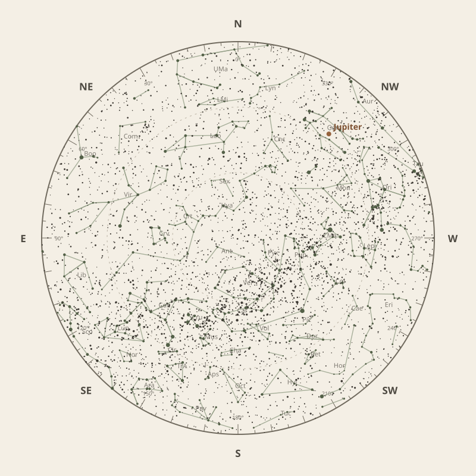

← Annual almanac


North is at the top; east is at the left. Solar System objects shown are above the horizon at 10 pm.
Monthly field almanac
March 2026
Galactic Centre viewing is best on 29 Mar 2026, from 2:56 am to 5:31 am, reaching 89°.
- New Moon
- 19 Mar Darkest skies
- Full Moon
- 4 Mar Brightest skies
- Best dark window
- 23 Mar 11h 08m
Current conditions
Checking the sky near South East Queensland, Australia…
Sky chart: 15 Mar 2026, 10 pm
South East Queensland, Australia local time.
Show static monthly chart

Night planner
Choose a date to see astronomical darkness, Moon interference, Galactic Centre visibility, and planet altitudes and times.
Best low-Moon dark periods this month
- 6:20 pm–5:28 am11h 08m · 22% Moon
- 6:21 pm–5:27 am11h 06m · 14% Moon
- 6:22 pm–5:27 am11h 04m · 7% Moon
March highlights
- Milky Way
Milky Way core window
2h 35m with 89° altitude.
- Minor planets
7 Iris
61° altitude; magnitude 9.4.
- Eclipses
Total lunar eclipse
Visible at maximum; umbral magnitude 1.15.
- Comets
Comet 43P
68° altitude; magnitude 17.2.
- Planets
Uranus
Best monthly date at 35° altitude.


Moon phases
92%
84%
26%
13%
82%
Low illumination favours faint targets. Bright lunar targets are best near full Moon.
Download Moon phase CSV →

Galactic Centre sessions
- 12:02 am–5:29 am5h 28m · core to 88°
- 12:03 am–5:28 am5h 26m · core to 88°
- 12:05 am–5:29 am5h 24m · core to 88°


Planet visibility
Evening
- Jupiter29 Mar · 6:30 pm40° · Good
- Uranus6 Mar · 6:30 pm35° · Good
- Saturn6 Mar · 6:30 pm8° · Poor
- Neptune6 Mar · 6:30 pm7° · Poor
- Venus6 Mar · 6:30 pm6° · Poor
Predawn
- Mercury31 Mar · 5:30 am21° · Fair
- Mars31 Mar · 5:30 am11° · Poor
Events
- 7 Iris61° altitude; magnitude 9.4.
- Total lunar eclipseVisible at maximum; umbral magnitude 1.15.
- Comet 43P68° altitude; magnitude 17.2.


Data and downloads
Positions are unavailable for 2 comet entries.
Occultation times use a smooth lunar limb; confirm grazing events with IOTA Occult 4.